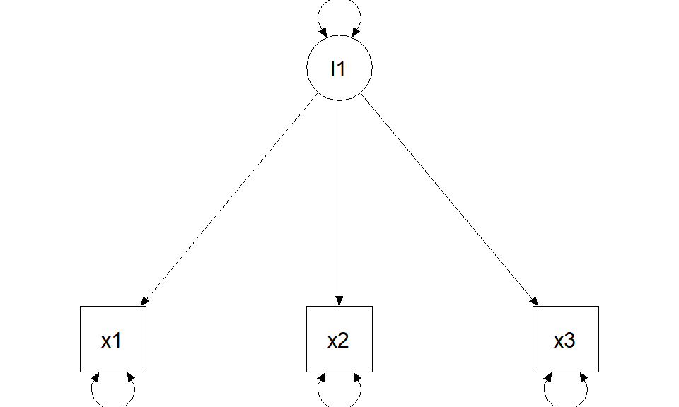
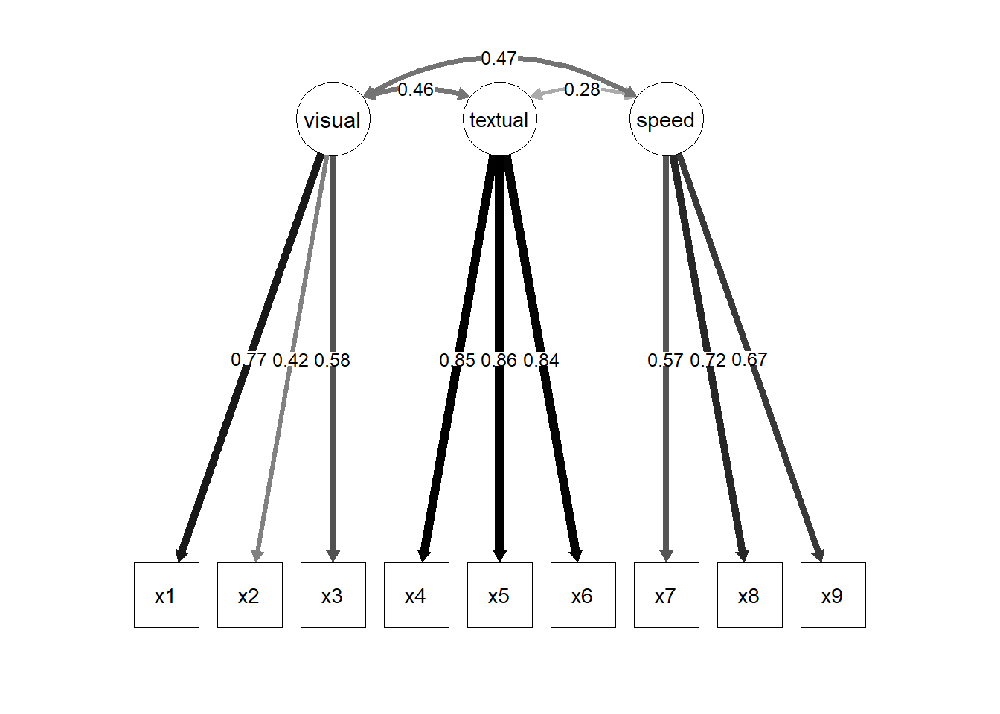

CFA: measurement models, identification, reliability
From items to constructs (measurement-first)
Today in the workflow
Specify → Identify → Estimate → Evaluate → Revise/Report
Learning objectives
By the end of this session you should be able to:
- Explain the difference between EFA and CFA (and why CFA is confirmatory)
- Write the CFA measurement model in equations and matrices
- Understand identification & scaling (marker vs
std.lv) - Fit CFA models in lavaan and interpret loadings, factor correlations, and residual variances
- Use local diagnostics in CFA (residuals, MI/EPC) without “fit hacking”
- Compute and report reliability from CFA (ω-family; and (briefly) bifactor implications)
Outline
- Factor analysis: what problem are we solving?
- EFA vs CFA (confirmatory stance)
- CFA model: equations, matrices, implied covariance
- Identification and constraints (scaling + rules)
- CFA in R (lavaan) + interpretation
- Reliability from CFA
- Bifactor model (keep your guard up)
Factor analysis
Factor analysis models the idea that a small number of latent dimensions explain systematic covariance among many observed variables.

Exploratory Factor Analysis (EFA)
EFA: discover a plausible loading pattern.
- loadings are “free” (rotation chooses a representation)
- useful for exploration and item development
- weak theory → strong exploration

Confirmatory Factor Analysis (CFA)
CFA: test a specific measurement hypothesis.
- you specify which loadings are zero vs free
- you can impose constraints (equal loadings, orthogonality, hierarchies)
- fit and diagnostics evaluate a theoretically constrained model
General formula (your original)
The general CFA model can be written as:
\[ \begin{aligned} \mathbf{x} &= \mathbf{\Lambda}_x\,\mathbf{\xi} + \mathbf{\delta} \\ \mathbf{y} &= \mathbf{\Lambda}_y\,\mathbf{\eta} + \mathbf{\epsilon} \end{aligned} \]
where () and () are observed variables, () and () are latent factors, and () and () are errors of measurement.
The general formula explained (scalar form)
\[ \begin{aligned} y &= b_0 + b_1 x + \epsilon \\ y_1 &= \tau_1 + \lambda_1\eta + \epsilon_1 \end{aligned} \]
\[ \begin{bmatrix} y_1 \\ y_2 \\ y_3 \end{bmatrix} = \begin{bmatrix} \tau_1 \\ \tau_2 \\ \tau_3 \end{bmatrix} + \begin{bmatrix} \lambda_1 \\ \lambda_2 \\ \lambda_3 \end{bmatrix} (\eta_1) + \begin{bmatrix} \epsilon_1 \\ \epsilon_2 \\ \epsilon_3 \end{bmatrix} \]
Measurement-first implications (reflective realism)
When we draw () (()) from latent to observed, we assume reflective latent variables:
- ARROWS are ARROWS: the construct affects responses
- “realist” interpretation: the latent variable is something that exists (at least as a stable attribute)
- observed scores = construct signal + measurement error
Pragmatic “just a summary” interpretations are not neutral: they imply different measurement models (PCA/EGA/…).
The implied covariance (the single most important equation)
For a standard CFA with latent covariance () and residual covariance ():
\[ \Sigma = \Lambda \Phi \Lambda' + \Theta \]
This is why:
- loadings (()) and factor correlations (()) jointly shape observed covariances
- correlated residuals (off-diagonal ()) are extra covariance not explained by factors
Matrices (your original visual slide)
Lambda: matrix of loadings

Phi: latent variance-covariance matrix

Theta: residual variance-covariance matrix

CFA “model families” you will see a lot
Key design choices:
- one factor vs multiple factors
- are factors correlated?
- orthogonal vs oblique
- hierarchical / second-order?
- bifactor structure?
All have statistical and theoretical consequences.

A quick visual tour: common CFA structures
One-factor model
Two-factor model (correlated factors)

Two-factor model (orthogonal factors)

Hierarchical model (second-order factor)

In R (lavaan grammar for CFA)
Core operator:
=~defines a factor from its indicators
m <- '
F1 =~ y1 + y2 + y3
F2 =~ y4 + y5 + y6
F1 ~~ F2 # factor covariance (oblique)
'
fit <- cfa(m, data = dat) # or sem(m, data = dat)
summary(fit, standardized = TRUE, fit.measures = TRUE)Constraints (scaling) — your original slide
To estimate latent-variable models, you must scale each factor. Two common strategies:
- Standardize latent variables: fix factor means to 0 and factor variances to 1 (
std.lv = TRUE). - Marker method: set one loading (()) per factor to 1 (lavaan default).
fit <- cfa(m, data = dat, std.lv = TRUE)Constraints explained (marker vs standardization)
\[ \Sigma = \Lambda\Phi\Lambda' + \Theta \]
Marker method (fix one loading to 1)
Standardization (fix factor variance to 1)
(Scaling changes the metric of unstandardized loadings, not the implied covariance model.)


Identification rules (your original framing)
For CFA, common identification rules include:
- the t-rule
- the Three-Indicator Rule
- the Two-Indicator Rule
The t-rule
Necessary but not sufficient:
\[ t \leq \frac{q(q+1)}{2} \]
where (t) is the number of free parameters and (q) the number of observed variables.
Intuition: the number of nonredundant elements in (S) is the maximum number of “equations”; if unknowns exceed equations, identification is impossible.
The Three-Indicator Rule
A sufficient (not necessary) condition (with diagonal ()):
- One-factor model: at least three indicators with nonzero loadings.
- Multifactor model is identified if:
- ≥ 3 indicators per factor
- each row of () has one and only one nonzero element (simple structure)
- () is diagonal
The Two-Indicator Rule
A sufficient (not necessary) condition for models with >1 factor:
- () diagonal
- each factor scaled (one () fixed to 1, or
std.lv=TRUE) - plus:
- ≥ 2 indicators per factor
- each row of (): one nonzero element
- () diagonal
- each row of () has at least one nonzero off-diagonal element
CFA evaluation (where deck 03 plugs in)
Global indices are the same as in deck 03 (χ², CFI/TLI, RMSEA+CI, SRMR).
What becomes CFA-specific is local misfit interpretation:
- big residual correlations → local dependence / method effects / cross-loadings
- MI/EPC candidates typically propose:
- cross-loadings (theory-threatening)
- correlated residuals (requires a clear justification)
- factor covariances / (rarely) indicator-level regressions
A disciplined CFA respecification mindset
- First: check items (loadings, residual variances, signs)
- Then: check patterns (blocks of residual correlations)
- MI/EPC only after you have a hypothesis for the misfit
- Prefer fewer, theory-consistent modifications over many “small fixes”
- Report the respecification path transparently (what changed and why)
Live example (lavaan): Holzinger & Swineford (1939)
dat <- HolzingerSwineford1939
m_hs <- '
visual =~ x1 + x2 + x3
textual =~ x4 + x5 + x6
speed =~ x7 + x8 + x9
'
fit_hs <- cfa(m_hs, data = dat, std.lv = TRUE)Interpret loadings and factor correlations
pe <- parameterEstimates(fit_hs, standardized = TRUE)
pe[pe$op %in% c("=~","~~") & pe$lhs %in% c("visual","textual","speed"),
c("lhs","op","rhs","est","se","pvalue","std.all")] lhs op rhs est se pvalue std.all
1 visual =~ x1 0.900 0.081 0 0.772
2 visual =~ x2 0.498 0.077 0 0.424
3 visual =~ x3 0.656 0.074 0 0.581
4 textual =~ x4 0.990 0.057 0 0.852
5 textual =~ x5 1.102 0.063 0 0.855
6 textual =~ x6 0.917 0.054 0 0.838
7 speed =~ x7 0.619 0.070 0 0.570
8 speed =~ x8 0.731 0.066 0 0.723
9 speed =~ x9 0.670 0.065 0 0.665
19 visual ~~ visual 1.000 0.000 NA 1.000
20 textual ~~ textual 1.000 0.000 NA 1.000
21 speed ~~ speed 1.000 0.000 NA 1.000
22 visual ~~ textual 0.459 0.064 0 0.459
23 visual ~~ speed 0.471 0.073 0 0.471
24 textual ~~ speed 0.283 0.069 0 0.283Reliability from CFA (ω family)
reliability(fit_hs) visual textual speed
alpha 0.626 0.883 0.688
omega 0.625 0.885 0.688
omega2 0.625 0.885 0.688
omega3 0.612 0.885 0.686
avevar 0.371 0.721 0.424Graphical representation

A hierarchical intelligence example (your original WISC slide)
Theory: test scores are affected by specific abilities (e.g., processing speed) that are influenced by an overarching factor ((g)).

Second-order CFA (syntax template)
m2 <- "
VCI =~ SI + VC + CO
PRI =~ BD + PCn + MR
WMI =~ DS + LN
PSI =~ CD + SS
g =~ VCI + PRI + WMI + PSI
"
fit2 <- sem(m2, std.lv = TRUE, sample.cov = S, sample.nobs = N)A second theoretical model: bifactor (your original)
Parallel theories: test scores are affected by a general factor ((g)) and by specific abilities that explain remaining variance.
All factors are set to be orthogonal.

Bifactor model in R (your original structure)
mb <- "
VCI =~ a*SI + a*VC + a*CO
PRI =~ b*BD + b*PCn + b*MR
WMI =~ c*DS + c*LN
PSI =~ d*CD + d*SS
g =~ SI + VC + CO + BD + PCn + MR + DS + LN + CD + SS
"
fitb <- sem(
mb,
orthogonal = TRUE,
std.lv = TRUE,
sample.cov = S,
sample.nobs = N
)Bifactor: interpretation requires diagnostics (not just fit)
Bifactor often improves fit by absorbing residual covariance. Before interpreting:
- is the general factor strong enough? (ECV / ωH / H)
- are specific factors meaningful or “junk factors”?
- do constraints (orthogonality, equal loadings) make sense?
# semTools helpers for bifactor diagnostics (when you fit a bifactor model)
# bifactorIndices(fitb)
# reliability(fitb) # omega family; ωH is especially relevantExercises (Lab 04)
Go to:
labs/lab04_cfa_reliability_omegas.qmd
You will practice:
- Fit and compare 1-factor vs correlated-factors CFA
- Inspect local misfit (residual correlations + MI/EPC) with a theory filter
- Compute reliability (ω) from CFA and report it
- (Optional) Fit a bifactor model and evaluate interpretability (ωH / ECV)
Take-home: 3 things
- CFA is a confirmatory measurement claim: zeros and constraints are theory
- Identification/scaling is not a nuisance—it’s the metric of your construct
- Reliability and validity are model-based: fit helps, but fit ≠ validity
Further reading / self-study
extras/ex10_bifactor_esem_method-factors.qmd— bifactor/ESEM/method factors (advanced)extras/ex05_miivs_factor-score-regression.qmd— factor scores & regression (later)- Classic SEM measurement chapters (CFA fundamentals; see course website reading list)
References
(Add citations/keys once the course bibliography is finalized for the website.)